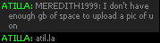

You are not logged in.

Introduction
EEAntiVandal is a bot that detects when someone vandalizes a level, and alerts the user. This project aims to reduce the amount of false positives (like filling in a shape) or drawing too quickly. Using Terra, the users edits can be reverted, preserving the underlying artwork. This is because all of the edits are stored in virtual layers, allowing each to be removed cleanly.Every block is saved. It's just a matter of how the individual blocks are orchestrated to achieve the effect.
There are no signup, forms, websites to log into, bots to download, things to click on; nothing like that. It's simple. The anti-vandal bot is present all the time; everywhere, anytime**. Simply type /giveedit BOTUSERNAME, and a command, and it'll revert the vandal's artwork*.
*With the exception of the beta.
**worlds that have less than 3 users will not be crawled by the anti-vandal bot, unless otherwise specified.
Volunteers
Right now, information is being collected in many EE rooms. With your help, using these saved EE sessions, one can replay the level and then tag when a vandalizer vandalized (or not).
Problems
Unfortunately, some block events (like sci-fi blocks) do not send who placed the block. This is a major fault in EEAntiVandal and its architecture.Workarounds:
- immediately delete all untrackable blocks
- using public data, track which users are vandals and ban them from all worlds (prevention)
- change all untrackable blocks to blocks with a similar color, or similar functionality
- associate all untracked blocks with a null user
- when a vandal "finishes", one must know the initial start and end time to remove the edits
- downside is that if two people are using untrackable blocks at the same time, both will have their edits removed.
More information
For further information, including the beta signup, go to http://get-ee-antivandalbot.herokuapp.com/.
Feel free to suggest improvements, ideas...anything!
Last edited by Hexagon (2015-01-12 22:46:16)
Online

So i have a few thoughts/Suggestions.
1. What happens if there isn't a troll, but you accidentally revert someone you didn't mean to. Say that someone was really productive and you just hit tab one too many times and revert all of their actions? Is the a undo button or is it just doomed.
2. What happens when you load a level? Surly most bot developers are aware that map data doesn't get updated automatically unless you program it to. So when you revert an action after loading the level, will it place just random blocks in an attempt to revert them. (This may be confusing so..)
Ex. There is an empty world. It's saved so if you do /loadlevel, it goes back to an empty world. Now you make a house. You save it. So now you have a saved house. Then all of the sudden someone trolls it. But you load the level, so you're back to your house, What happens? Does it clear all reverted actions that were changed upon loading the level? Or will it still attempt to revert all the actions that were preciously done?
3. You say it helps those with slow connections. Does the bot check for lagged blocks(Does it check if it missed any blocks) Because if it tries to undo the actions of a troller and the bot goes too fast and misses 40 blocks, i would say that's more tedious to clean up than the original action.
4. I don't understand what you mean by if your computer crashed. Are you saying that you store each individual block placed in a certain file? That not only takes up space but also can backfire. What happens when all the saved data is reverted a week later and you don't remember anything that happened? That's a lot of random blocks being placed.
Offline

The bot is web-based. I'm not sure what you're getting at with #3. Lagged blocks are unrecoverable and don't exist. No special handling should be required.
Confirmed worse than hitler and imprisoned for 9 zillion yearz ;_;
Online
My bad i misread the post.
Offline
Hey Jabatheblob1, thanks for the questions! Here are a few answers that may clarify my post:
1. So far, you're doomed if you revert the wrong player (since it deletes the blocks permanently). I agree that it is definitely a good idea to include an undo button because mistakes should not be punished.
2. To my knowledge the blocks "modified" in loadlevel are from the owner's user id, so they will go on the owner's layer (which is sort of bad). This means that if the world becomes empty (after loadlevel) and the trollers layer is removed (after you make your house), the world blocks will revert to their previous state, which means that they will become "empty" (when the world was loaded with loadlevel). However since I can detect when the user saves and reloads a level, I could make this functionality better.
Concerning lagging blocks, my bot has a very difficult time placing more than one block faster than about 100ms. I hope this is fixable and I'll ask programmer(s) on this forum if they could help!
3. (in response to different55 as well) It's sort of web based but there is no control panel or entering in your EE password. What I'm planning to do is the user goes to my website, enters in their world url, the bot visits the world and asks the owner to say a code. If the owner replies with the code, then the world is authorized. You never have to visit the website again because the bot will stay in the world and you can issue it commands (the bot will run on my computer which may or may not be a good idea). I'm not sure if this is my internet connection but it seems to recognize all blocks being placed and no blocks have been missed.
The major issue here is giving the bot edit (\giveedit) which might be a pain.
4. Since the bot is running on my computer, if their computer crashes then the bot is unaffected. Everything is saved to a MySQL database (backed up) along with dates, usernames, ids, block ids and coordinates of each block so that my program can go through it later. However I totally agree that after about a week of blocks it could be very confusing as to whose on what layer and how to revert it.
If you mean that if the bot wasn't running for a week and came back online, there would be no choice but to either (a) revert the world to the last saved point or (b) delete the entire world and start over.
Last edited by Hexagon (2014-06-04 11:52:48)
Online
Yeah that's mainly talking about with 4. Overall it seems like a good idea, i think just some of these little fixes can help and make it better, also maybe is it possible to have a place to enter the code into the website, have a fake account go into the world, check if it's a good code and it's the actual code, then if it is it will connect the real bot. That way that there is no problems with the codes and such. Also you can detect when someone gives you edit in a certain packet but i am assuming you knew that if not i can help you with a few of these things or if you have any more questions, Bots and Programming is probably your best bet.
Offline
also maybe is it possible to have a place to enter the code into the website, have a fake account go into the world, check if it's a good code and it's the actual code, then if it is it will connect the real bot. That way that there is no problems with the codes and such.
That's a really smart idea, didn't even think about that!
Finding the packet that contains whether or not I was given edit would definitely make the \giveedit process easier because my bot could remind the owner to give me edit. If I do need help (which will be quite likely) I'll definitely ask Bots and Programming.
Online
Message type "access" would be received when edit is given to you.

Offline
Message type "access" would be received when edit is given to you.
Thanks! Is there a packet that detects when you loose edit (i.e \removeedit)?
Online

"access" gets edit and "lostaccess" gets when you don't have edit anymore.
Offline
How does it detect "malicious edits"? For example, what if I wanted this bot and it removes edit from my friend that wants to help build.


Offline
How does it detect "malicious edits"? For example, what if I wanted this bot and it removes edit from my friend that wants to help build.
This is actually one of the many problems that I have yet to solve  .
.
Method one is for my bot to ask you if the edits are "allowed"; if not they will be reverted.
Method two is to compare the density and level of entropy in your layer and compare it against newly added blocks. For example, if you decide that you want to make something really blue and they add a bunch of lime green blocks, it'll think that they are editing non-constructively. Different rules apply if they are overwriting your blocks versus adding blocks in the empty spaces.
In general, microsecond timing detects when two blocks are simultaneously created together diagonally, which is a pattern when trolls create lines over the world. However drawing straight lines quickly won't be classified as trolling unless it significantly deviates from the average path.
It's far from perfect (if usable) but if all else fails the layer can be removed 
Last edited by Hexagon (2014-06-04 21:08:52)
Online

anch159 wrote:How does it detect "malicious edits"? For example, what if I wanted this bot and it removes edit from my friend that wants to help build.
This is actually one of the many problems that I have yet to solve
. One method is for the bot to ask you "so and so is changing your layer. Do you want them to change your layer?" and the other method is to measure the level of entropy in your layer, and match it against what new blocks are being added (by the other user). For example, if you decide that you want to make something really blue and they add a bunch of lime green blocks, it'll think that they are editing non-constructively. Furthermore, it depends on whether or not they are overwriting blocks on your layer or adding blocks. Drawing lines very quickly can be detected (and won't be classified as trolling).
The thing is, if you don't make drawing lines classified as trolling, the trolls can use that to their advantage and start trolling art by drawing a bunch of lines through it.
This wouldn't be too much of a problem if you made an external way of receiving edit - hosting a site that will give users a captcha to solve and allow them to input their username.
If a troll is caught, you can ban their IP from the site and ultimately make them unable to receive further edit ... I've already done this and it prevented trolling for hours.
However, I think there may be a decline in users participating in editing since they don't fully understand the concept of visiting a site to gain edit privileges.
-
There's also ways to place blocks anonymously still. I won't be revealing how publicly, but I'm sure you'll find a way to prevent against it.
All in all, good luck with this project. The site looks nice, and I hope the code is even better.
»contact[TeamViewer: ( atila~ );, E-Mail: ( [email protected] );#~] [note] Feel free to contact me.
-*--*--*--*--*--*--*--*--*--*--*--*--*--*--*--*--*--*--*--*--*--*--*--*--*--*--*--*--*--*--*--*-*-*
Offline
Hey since I'm not good with bots, this may seem stupid to you, but here it goes anyway:
Maybe you can make it so if you are placing lines over like specific shapes and colors (depending on the other things built in the world), it will detect it is a troll.
Offline
The thing is, if you don't make drawing lines classified as trolling, the trolls can use that to their advantage and start trolling art by drawing a bunch of lines through it.
I'll definitely have to find a better solution for the line drawing as it seems it can be easily abused by trollers and sometimes falsely detected by anti-troll bots.
This wouldn't be too much of a problem if you made an external way of receiving edit - hosting a site that will give users a captcha to solve and allow them to input their username.
If a troll is caught, you can ban their IP from the site and ultimately make them unable to receive further edit ... I've already done this and it prevented trolling for hours.
However, I think there may be a decline in users participating in editing since they don't fully understand the concept of visiting a site to gain edit privileges.
This is actually a really good idea. Fewer people will have edit (as you've mentioned) but that might be a good thing since worlds are only so large and only so much art can be placed on it.
There's also ways to place blocks anonymously still. I won't be revealing how publicly, but I'm sure you'll find a way to prevent against it.
As of now I have no way to guard against that  because there doesn't seem to be anything distinguishing the fake ones from the real ones. This problem can basically kill my bot (all users could be erased).
because there doesn't seem to be anything distinguishing the fake ones from the real ones. This problem can basically kill my bot (all users could be erased).
Online
Hey since I'm not good with bots, this may seem stupid to you, but here it goes anyway:
Maybe you can make it so if you are placing lines over like specific shapes and colors (depending on the other things built in the world), it will detect it is a troll.
That's definitely an idea. For example, I could detect whether or a user was "helping" many users at once by checking how many users have been overwritten by them within a time frame.
Online
You are awesome if you can do all this.
Offline
You are awesome if you can do all this.
I don't think I can do it alone; I'll have to ask some more people to help out (if they're willing) once I get going.
Online
anch159 wrote:You are awesome if you can do all this.
I don't think I can do it alone; I'll have to ask some more people to help out (if they're willing) once I get going.
I'd be willing to help if i get a little insight on it
much spelling mistake such Mr.Shoe
LOA is offering personalized bots - Request your own now!
Teamviewer: 'abrar11' feel free to add me
Offline
I am really looking forward to this. When do you think it will be released? 
Offline
I'd be willing to help if i get a little insight on it
Once I crystalize my plans and how I'm planning to tackle the issue, I would absolutely appreciate if you could help!
I am really looking forward to this. When do you think it will be released?
I'm not sure, sorry  . If you're in a rush, ATD and EETD are perfectly acceptable solutions (as my bot is essentially a bit of a copycat).
. If you're in a rush, ATD and EETD are perfectly acceptable solutions (as my bot is essentially a bit of a copycat).
Right now I have layers theoretically working (the query appears to be returning the correct data from the database when removing layers). I know that doesn't help much but it's getting near the initial testing stage once I run some thorough unit tests.
Last edited by Hexagon (2014-06-04 22:59:23)
Online
abrar11 wrote:I'd be willing to help if i get a little insight on it
Once I crystalize my plans and how I'm planning to tackle the issue, I would absolutely appreciate if you could help!
Alright pm me when/if you need the help 
much spelling mistake such Mr.Shoe
LOA is offering personalized bots - Request your own now!
Teamviewer: 'abrar11' feel free to add me
Offline
This is not new, I have been doing this for a long time now. It's even in the source of masterbot. I hope people will use this instead of clearing their worlds now. 
Last edited by ostkaka (2014-06-04 23:36:30)
Smiley doors!
swedish != english => Fix my english!
Offline
This is not new, I have been doing this for a long time now. It's even in the source of masterbot. I hope people will use this instead of clearing their worlds now.
Sorry, I should have searched the forums before I made this bot  ! Completely didn't know about masterbot.
! Completely didn't know about masterbot.
If your bot does what mine does (layers and all that) there's really no sense in making mine I suppose, since one has already been made. I'll check it out tonight and see how it's like; would really find it useful.
Online
I would like a download-free bot. The reason I rarely use bots is because of their difficulty to set up.
Offline